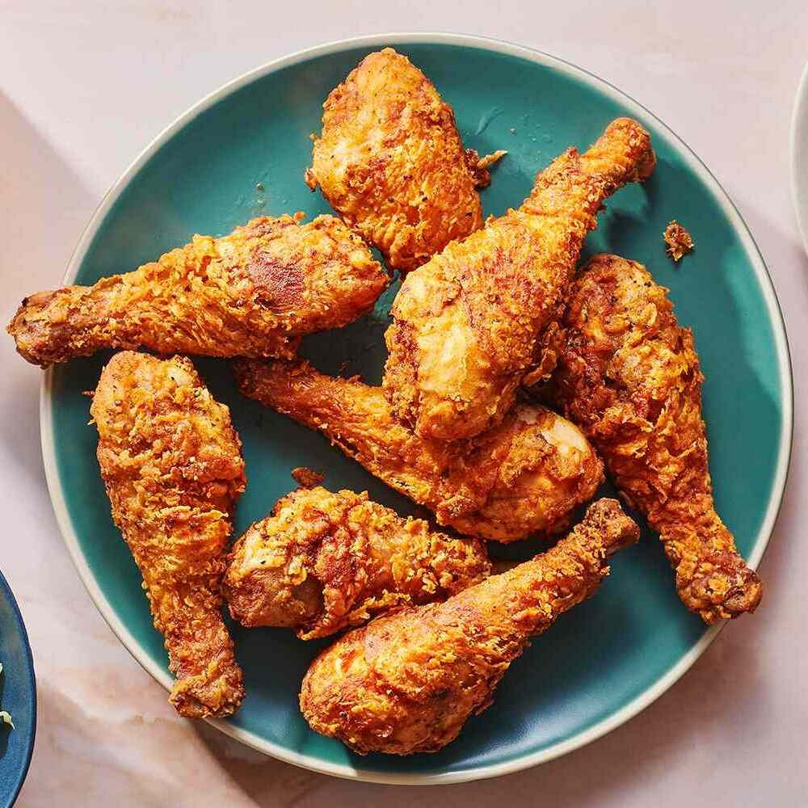

Ingredients:
Chicken pieces (drumsticks, thighs, wings) Buttermilk All-purpose flour Paprika Garlic powder Onion powder Salt and black pepper Vegetable oil for frying
Instructions:
Soak the chicken pieces in buttermilk for at least 1 hour, or overnight for better flavor. In a bowl, mix flour, paprika, garlic powder, onion powder, salt, and black pepper. Heat vegetable oil in a deep fryer or a large, deep skillet to 350°F (175°C). Dredge the soaked chicken pieces in the flour mixture, ensuring an even coating. Carefully place the coated chicken in the hot oil, frying until golden brown and cooked through. Make sure the internal temperature reaches 165°F (74°C). Remove the fried chicken and let it drain on a paper towel-lined plate. Serve hot and enjoy the crispy, succulent goodness of homemade fried chicken.
Chicken
Author
Enjoy homemade crispy fried chicken with this easy recipe. Achieve a perfect golden-brown crunch outside and juicy tenderness inside. Elevate your comfort food game with this flavorful and simple dish.
Chicken pieces (drumsticks, thighs, wings) Buttermilk All-purpose flour Paprika Garlic powder Onion powder Salt and black pepper Vegetable oil for frying
Instructions:
Soak the chicken pieces in buttermilk for at least 1 hour, or overnight for better flavor. In a bowl, mix flour, paprika, garlic powder, onion powder, salt, and black pepper. Heat vegetable oil in a deep fryer or a large, deep skillet to 350°F (175°C). Dredge the soaked chicken pieces in the flour mixture, ensuring an even coating. Carefully place the coated chicken in the hot oil, frying until golden brown and cooked through. Make sure the internal temperature reaches 165°F (74°C). Remove the fried chicken and let it drain on a paper towel-lined plate. Serve hot and enjoy the crispy, succulent goodness of homemade fried chicken.